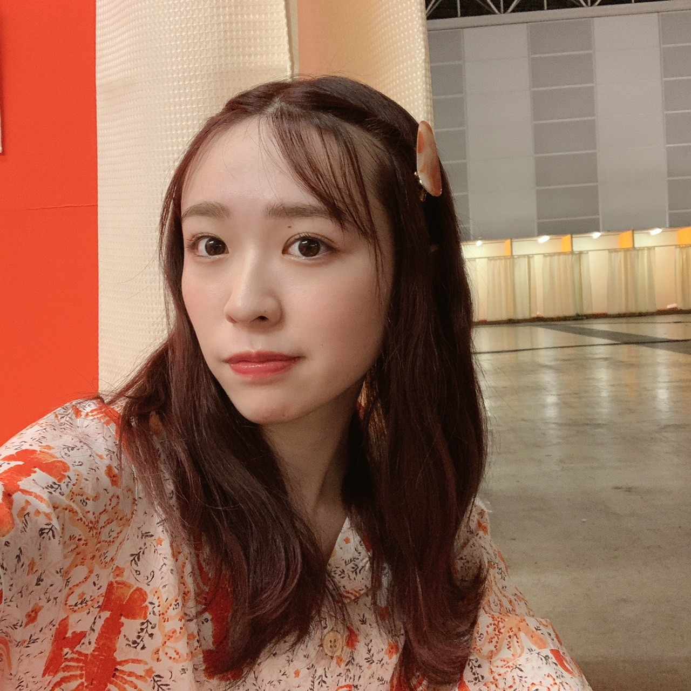
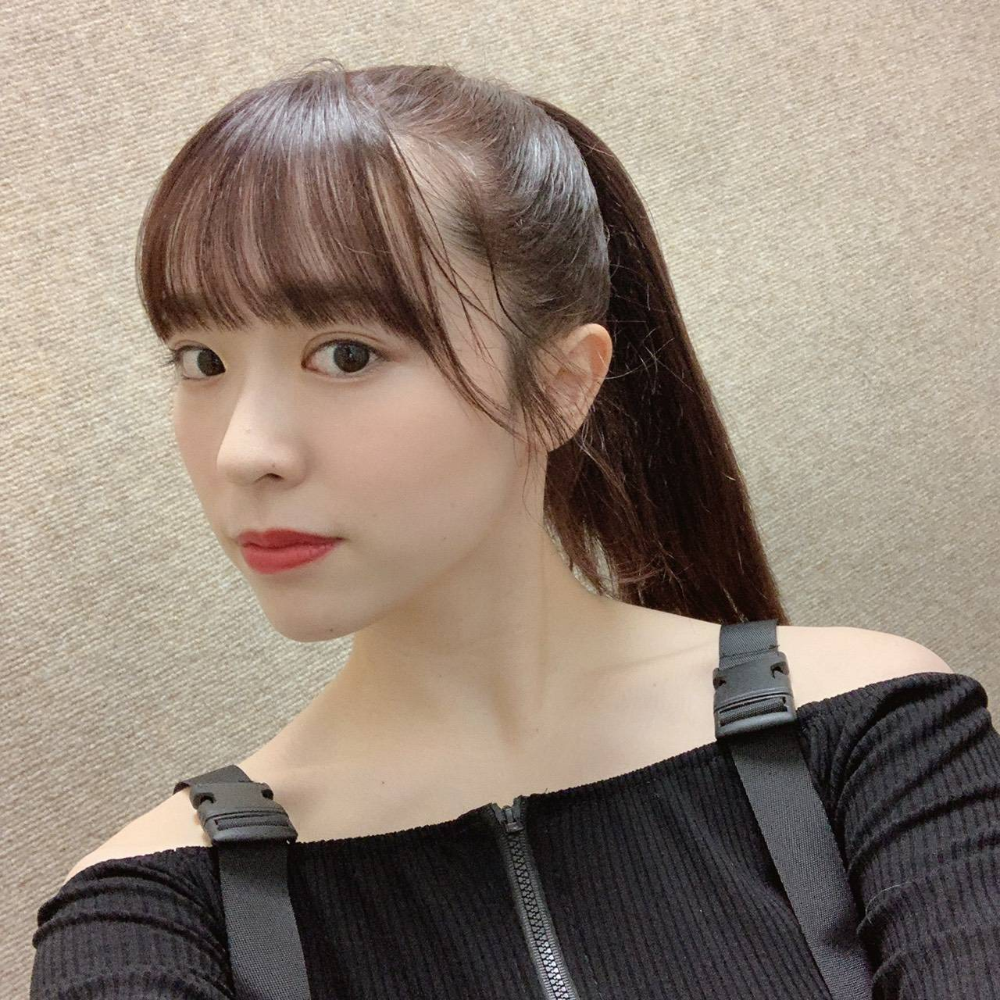

2020/0622Mon革命の馬
46時間、無事全員で駆け抜けられました。
見て下さった皆様本当に有難うございました！
ああ〜そういえば個人的に嬉しかった事が。
麗乃ちゃんの電視台に少しだけ
出演させてもらったんだけれども、
麗乃ちゃんがアンケートに出て欲しい人って
いうので私の名前を挙げてくれていたらしく。
実は私も、もしツーショットトークするなら
誰と話したい？ってなった時に
麗乃ちゃんの事を書いていたから
余計に嬉しくなっちゃいましたね〜
ありがとう麗乃ちゃん！

日奈子とお揃いで購入してあった
ロブスターパジャマ
オクトパスもいますよ〜
2期生企画もみんなで話し合って
お揃いのパジャマにして
みんなでいつもしないような明るい感じの
髪型で遊ばせて深夜テンションで騒いで
私の大好きな2期生が詰まってました。
もっと色々やりたかったけど
時間が足らなかった、、、
私の電視台では
『46時間ダンス完コピチャレンジ！』
やらせて頂きました！
振り付けは私の友達でもあり先生でもある
アベカホにお願いをしました。
革命の馬も私が選曲しました！
出演時間やその他諸々動いていて
本当8時間くらいしか練習時間がなくて
私もダンサーの友達もかなり焦っていました。
本当に本番中にフリーズしちゃう可能性も
あるなあと考えながら、、笑
アクロバットは体調面を考えて
違う振り付けに急遽変更させて頂きました。
完璧をお見せ出来ず申し訳ありません、、
なんかもう終わった今もボケーっと
してしまうくらい本気で望んで
集中してきたものだから何を書けばいいか
全く思い浮かばず申し訳ないです、、
今の身体の状態をみて
満身創痍ってこの事を言うんだろうなって
自分で思ってます(笑)
この企画で皆様を少しでも元気付けられたのならば
私はとても嬉しいです、、

かりんちゃんからも、井上の小百合からも
連絡が来てすんごく嬉しかったなあ
近くで見ていてくれたまいちゅん、
梅座右衛門、でんぷんの3人は
私が見てほしいって思った3人を選ばせて
頂きました！来てくれて本当にありがとう。
この3人は普段から私のダンスを物凄く
褒めてくれるんです。
だからこそ見て欲しかったから
休憩する時間削ってまで駆けつけてくれて
本当に感謝です、、
終わった後、本当に沢山のメンバーから
激励の言葉を貰って
みんなが私の電視台を見てくれていた嬉しさや
練習中も気遣ってくれていた姿を
肌で感じて、更に乃木坂のみんなが
大好きで尊くなりました。
寝ずに46時間TVを作り上げて下さった
スタッフの皆様、
そして応援して下さっていたファンの皆様
本当に有難うございました！！
今日はゆっくり休む！笑
みり愛
2020/06/22 20:30
コメント(990)
みり愛ちゃん、ブログ更新ありがとう！
46時間TV、電視台お疲れ様でした
ダンス、めちゃくちゃかっこよくてしなやかでセクシーで綺麗でした
とても感動してテレビの前で泣いちゃいました
アクロバットは本当に悔しかったと思うけど、無理せず大事をとってくれて嬉しいです
2期企画もめちゃくちゃおもしろかったです
深夜にお腹抱えて笑いました
早く会いたいです
ゆっくり休んでね！！
46時間TV、電視台お疲れ様でした
ダンス、めちゃくちゃかっこよくてしなやかでセクシーで綺麗でした
とても感動してテレビの前で泣いちゃいました
アクロバットは本当に悔しかったと思うけど、無理せず大事をとってくれて嬉しいです
2期企画もめちゃくちゃおもしろかったです
深夜にお腹抱えて笑いました
早く会いたいです
ゆっくり休んでね！！
ブログ更新ありがとう。46時間TVお疲れ様でした。
ダンス、最初はできないんじゃないかって、そう思いました。でも電視台が始まってみたらいつものように小柄なのに存在感の大きい力強いダンスをするみり愛ちゃんがいて、思わず感動して泣いてしまいました。
できることが限られてしまった期間が長く、不安を感じることも多かったけれど今回の46時間TVですごく勇気をもらえました。
スタジオに行くのも勇気がいる時勢のなか、46時間ぶっ通しでコンテンツを届けてくれて本当にありがとう。
ゆっくり休んでくださいね。振り付けを考えたダンサーの方も凄かったと思います。お疲れ様でした！二期生企画楽しかった！
ダンス、最初はできないんじゃないかって、そう思いました。でも電視台が始まってみたらいつものように小柄なのに存在感の大きい力強いダンスをするみり愛ちゃんがいて、思わず感動して泣いてしまいました。
できることが限られてしまった期間が長く、不安を感じることも多かったけれど今回の46時間TVですごく勇気をもらえました。
スタジオに行くのも勇気がいる時勢のなか、46時間ぶっ通しでコンテンツを届けてくれて本当にありがとう。
ゆっくり休んでくださいね。振り付けを考えたダンサーの方も凄かったと思います。お疲れ様でした！二期生企画楽しかった！
ありがとう！
みりあすばらしかった！
この経験はダンスだけでなく、「芸」に取り組む姿勢という意味において大きなものになるのではないかな。
これからはみりあのダンスをいままで以上に注意深く観てみることとする。一瞬たりとも漏らさずにね！
この経験はダンスだけでなく、「芸」に取り組む姿勢という意味において大きなものになるのではないかな。
これからはみりあのダンスをいままで以上に注意深く観てみることとする。一瞬たりとも漏らさずにね！
可愛い
感動をありがとう！！
めちゃかっこよかった
46時間TVおつかれさま！
ダンスめっちゃかっこよかった！
改めてみり愛ちゃんのダンスが好きだなって思いました！
ダンスめっちゃかっこよかった！
改めてみり愛ちゃんのダンスが好きだなって思いました！
可愛くもありかっこよかったです！
本当にありがとうございました！
みり愛ちゃん本当にお疲れ様でした！感動しました
みり愛ちゃん、ブログ更新ありがとう！！！
46時間、電視台のダンスお疲れ様！！ほんとに凄かった 感動したよ あんな湿布貼ったりして練習で忙しい中、人狼とか、2期生の修学旅行、色んな企画でみりあちゃんなりに笑顔で一生懸命やってる姿見てほんとに心動かされたし、裏で悔しくて？泣いてるってエピソード聞いて、みりあ姉ちゃんらしいなって、俺も悔しがり屋だから共感してきて涙が止まらんかった。やっぱみり愛ちゃんは偉大で、俺の中で一番のセンターで推しやなって改めてきづかされたよ！！
ありがとう！！そしてお疲れ様。当たり前に握手会とかで会えた日々が、長い間あえなくなって、もっと色々伝えとけばよかったなって色々後悔してる笑でもこれから握手会とかライブで会える事を祈って！握手券も30枚以上あっから！会いに行くね！そんときはいっぱい語り合お！みりあ姉ちゃんほんとにお疲れ様でした
46時間、電視台のダンスお疲れ様！！ほんとに凄かった 感動したよ あんな湿布貼ったりして練習で忙しい中、人狼とか、2期生の修学旅行、色んな企画でみりあちゃんなりに笑顔で一生懸命やってる姿見てほんとに心動かされたし、裏で悔しくて？泣いてるってエピソード聞いて、みりあ姉ちゃんらしいなって、俺も悔しがり屋だから共感してきて涙が止まらんかった。やっぱみり愛ちゃんは偉大で、俺の中で一番のセンターで推しやなって改めてきづかされたよ！！
ありがとう！！そしてお疲れ様。当たり前に握手会とかで会えた日々が、長い間あえなくなって、もっと色々伝えとけばよかったなって色々後悔してる笑でもこれから握手会とかライブで会える事を祈って！握手券も30枚以上あっから！会いに行くね！そんときはいっぱい語り合お！みりあ姉ちゃんほんとにお疲れ様でした
みり愛ちゃんのダンス、凄かったです！
みり愛ちゃん本当にお疲れさまです！
短時間であのレベルにできるみり愛ちゃんを本当に尊敬します！
僕の中では1番のアイドルでありダンサーです！
あんま泣かない人間なんだけど、でんちゃんとかが言ってた裏話とか聞いたらやっぱりすごく努力家なんだと改めて思い泣いてしまいました(笑)
46時間テレビを見てより何倍もみり愛ちゃんが好きになったし、早く直接お礼をしたいなと思いました！
本当にお疲れ様です！
お仕事も再開すると思うけど、それまではゆっくり休んでね！
短時間であのレベルにできるみり愛ちゃんを本当に尊敬します！
僕の中では1番のアイドルでありダンサーです！
あんま泣かない人間なんだけど、でんちゃんとかが言ってた裏話とか聞いたらやっぱりすごく努力家なんだと改めて思い泣いてしまいました(笑)
46時間テレビを見てより何倍もみり愛ちゃんが好きになったし、早く直接お礼をしたいなと思いました！
本当にお疲れ様です！
お仕事も再開すると思うけど、それまではゆっくり休んでね！
46時間TVお疲れ様！！
みり愛ちゃんの乃木坂電視台ちゃんと見たよ〜
ダンスすごく上手で完全に完コピしてて、ほんとに推しのみり愛ちゃんって凄いなって努力の塊で努力の天才で、そんなみり愛ちゃん推しになれて良かったって思いました。
みり愛ちゃんのダンス見て元気になって、みり愛ちゃんの涙を見て感動して涙が出ました。
コロナがおさまって、イベントが開催されることになったら、また会えるって思って頑張ります！
みり愛ちゃん、ゆっくり休んで、痛めちゃった腕治してね！
みり愛ちゃんの乃木坂電視台ちゃんと見たよ〜
ダンスすごく上手で完全に完コピしてて、ほんとに推しのみり愛ちゃんって凄いなって努力の塊で努力の天才で、そんなみり愛ちゃん推しになれて良かったって思いました。
みり愛ちゃんのダンス見て元気になって、みり愛ちゃんの涙を見て感動して涙が出ました。
コロナがおさまって、イベントが開催されることになったら、また会えるって思って頑張ります！
みり愛ちゃん、ゆっくり休んで、痛めちゃった腕治してね！
みりあー
みり愛ちゃんブログ更新ありがとう！
46時間TVお疲れ様〜。
ダンスすっごく良かった、感動したよ。
辛さを表に見せないみり愛ちゃんの強さ、ダンスへの情熱がものすごい伝わってきて泣きそうになったよ〜。
ダンスめちゃくちゃカッコよかったなあ。
これを機にもっと色んな人がみり愛ちゃんのダンスに注目してくれると嬉しいね！
アクロバット出来なくて悔しかったと思うけど、素晴らしかったよ！
感動をありがとう！！！
46時間TVお疲れ様〜。
ダンスすっごく良かった、感動したよ。
辛さを表に見せないみり愛ちゃんの強さ、ダンスへの情熱がものすごい伝わってきて泣きそうになったよ〜。
ダンスめちゃくちゃカッコよかったなあ。
これを機にもっと色んな人がみり愛ちゃんのダンスに注目してくれると嬉しいね！
アクロバット出来なくて悔しかったと思うけど、素晴らしかったよ！
感動をありがとう！！！
おつかれさま。 色んなところで活躍してましたね！ 特に、ダンスは本当に感動。革命の馬じたいが、音がかっこよくて感動するのに、みりあちゃんが本気で挑んでる姿に涙しました。 これからも好きだな応援したいなって思ったので つまりは……
大好きですって話です笑
大好きですって話です笑
みり愛ちゃん更新ありがとう！
そしてお疲れ様！
ダンスはただただ感動でした…
ゆっくり休んでね！
そしてお疲れ様！
ダンスはただただ感動でした…
ゆっくり休んでね！
お疲れ様！
カッコ良かったですよ
おやすみなさい
カッコ良かったですよ
おやすみなさい
革命の馬のダンスほんとうに感動しました！
みりあちゃん！！ブログありがとう！
46時間テレビお疲れ様でした！
本当にダンス感動しました、、、ほんとうに、
弱みを見せず、裏で計り知れない努力をして表では完璧に披露する、そんなみりあちゃんに私は感動しました。人として素敵だなって心の奥底から思いました。AbemaTVのコメント欄もみんなすごい！って話題になっていました！
このみりあちゃんの努力がもっともっとたくさんの方へ伝わりますように！
沢山休んでくださいね！
46時間テレビお疲れ様でした！
本当にダンス感動しました、、、ほんとうに、
弱みを見せず、裏で計り知れない努力をして表では完璧に披露する、そんなみりあちゃんに私は感動しました。人として素敵だなって心の奥底から思いました。AbemaTVのコメント欄もみんなすごい！って話題になっていました！
このみりあちゃんの努力がもっともっとたくさんの方へ伝わりますように！
沢山休んでくださいね！
46時間TVお疲れ様でした！
ダンスかっこよかった！！腕大丈夫ですか？
ゆっくり休んでね！
ダンスかっこよかった！！腕大丈夫ですか？
ゆっくり休んでね！
みり愛お疲れ様！
みり愛のダンス好きだったけどもっと好きになったよ！！
いろんなみり愛が見れて楽しかったよ〜
ゆっくり休んでね！
みり愛のダンス好きだったけどもっと好きになったよ！！
いろんなみり愛が見れて楽しかったよ〜
ゆっくり休んでね！
お疲れ様です。
電視台とても美しく、カッコ良かったです。
感動しました。
ゆっくり休んでください。
これからも陰ながら応援しています。
電視台とても美しく、カッコ良かったです。
感動しました。
ゆっくり休んでください。
これからも陰ながら応援しています。
ほんとにかっこよかったよ！！
みり愛ちゃんを推せてて幸せです！
みり愛ちゃんを推せてて幸せです！
ほんとにお疲れ様でした
46時間TV、ほんとにお疲れさま～(^o^)v
革命の馬、めっちゃしびれたよ！
ほんとに感動した(T_T)
ほんとにありがとう！！
ぼーちゃん(^o^)v 福島
革命の馬、めっちゃしびれたよ！
ほんとに感動した(T_T)
ほんとにありがとう！！
ぼーちゃん(^o^)v 福島
46時間TVお疲れ様でした！
ダンス最高でした！
ゆっくり休んでください！
ダンス最高でした！
ゆっくり休んでください！
ブログ更新ありがとうございます！
46時間TVお疲れ様！
少ない時間のなかで、あれだけできるの本当に凄いです。
私は感動しました、怪我してもなお頑張る姿カッコいいです！
革命の馬を踊る姿、しっかり目に焼き付けました、まだ無料で観れるので何回もリピートしてます！
2期生企画も人狼も麗乃ちゃんの電視台も観たよ！日奈子ちゃんとのお揃いパジャマいいね！2期生とのお揃いパジャマもあるし、麗乃ちゃんの電視台もとっても面白かったです！
ゆっくり休んでください！
本当にお疲れ様でした！
46時間TVお疲れ様！
少ない時間のなかで、あれだけできるの本当に凄いです。
私は感動しました、怪我してもなお頑張る姿カッコいいです！
革命の馬を踊る姿、しっかり目に焼き付けました、まだ無料で観れるので何回もリピートしてます！
2期生企画も人狼も麗乃ちゃんの電視台も観たよ！日奈子ちゃんとのお揃いパジャマいいね！2期生とのお揃いパジャマもあるし、麗乃ちゃんの電視台もとっても面白かったです！
ゆっくり休んでください！
本当にお疲れ様でした！
みりあちゃん46時間テレビお疲れ様！ずっとは見れなくて、あとから電視台など見たけど、みりあちゃんのダンスを一番に見ました！あれだけ短い時間で、一発勝負で大変だったはずなのにすっごく素敵なパフォーマンスでした 私も部活のダンス頑張ろうと思いました
ありがとうございます。大好きです！ゆっくりしっかり休んでね〜
ありがとうございます。大好きです！ゆっくりしっかり休んでね〜
46時間お疲れ様！
電視台めっちゃ良かったよ！感動した！
今はゆっくり休んでね！
電視台めっちゃ良かったよ！感動した！
今はゆっくり休んでね！
みり愛ちゃんのダンス本当にカッコよかったし終わった後自分もなんか感動してしまって号泣しちゃいました。二期生企画も最高で二期生企画でも泣いちゃいました笑笑
46時間お疲れ様でした、ゆっくり休んでください！
46時間お疲れ様でした、ゆっくり休んでください！
ほんっっっっっっとうによかった！！！！！
限られた時間の中で挑戦する気持ち、決して諦めない姿勢、本番で成功させる力
何から何まで最高だったし感動しました！
期別企画では2期生メンバーの中での妹可愛いみり愛ちゃんを、電視台ではこれぞ｢渡辺みり愛｣って感じの最高にかっこいいみり愛ちゃんを。
色んなみり愛ちゃんが見れてとても嬉しかったです。
また直接感想をお伝えできる機会を楽しみにしています。
本当にお疲れ様でした。本当にありがとうございました。
限られた時間の中で挑戦する気持ち、決して諦めない姿勢、本番で成功させる力
何から何まで最高だったし感動しました！
期別企画では2期生メンバーの中での妹可愛いみり愛ちゃんを、電視台ではこれぞ｢渡辺みり愛｣って感じの最高にかっこいいみり愛ちゃんを。
色んなみり愛ちゃんが見れてとても嬉しかったです。
また直接感想をお伝えできる機会を楽しみにしています。
本当にお疲れ様でした。本当にありがとうございました。
お疲れ様でした！
かっこよかったです
かっこよかったです
電視台のダンス凄かったよ！
いつもありがとう！
ダンスダンスダンス！
いつもありがとう！
ダンスダンスダンス！
みり愛〜46時間テレビお疲れ様でした！
ブログ更新もありがとう〜！
個人的にいくつか感動した電視台があって
そのひとつがみり愛の電視台で、色んなジャンルのダンスが、混ざったダンスでしかも好きな曲の革命の馬を披露してくれるって聞いた時はすごく嬉しくて期別企画とか電視台出つつ完コピダンス披露してくれてほんとにありがとうございます！ほんとに感動して毎日朝昼晩って見てます!!!その度涙が溢れて出しまった〜
今密を守りながらの状況の中で完走してくれてほんとに感謝しかないです。ファンの人のためにこんなに楽しませてくれた乃木坂ちゃん達がもっと好きになりました！
ほんとに46時間ありがとうございます!!!
ブログ更新もありがとう〜！
個人的にいくつか感動した電視台があって
そのひとつがみり愛の電視台で、色んなジャンルのダンスが、混ざったダンスでしかも好きな曲の革命の馬を披露してくれるって聞いた時はすごく嬉しくて期別企画とか電視台出つつ完コピダンス披露してくれてほんとにありがとうございます！ほんとに感動して毎日朝昼晩って見てます!!!その度涙が溢れて出しまった〜
今密を守りながらの状況の中で完走してくれてほんとに感謝しかないです。ファンの人のためにこんなに楽しませてくれた乃木坂ちゃん達がもっと好きになりました！
ほんとに46時間ありがとうございます!!!
みりあブログ更新ありがとう！
46時間TVお疲れ様！
みり愛が出たのは欠かさず見てたよ！
人狼の髪型もめちゃめちゃ可愛かったし、2期生企画では、面白いみり愛が見れたし、れのちゃんの電視台では、戸惑うみり愛が見れたし、みり愛の電視台では、かっこよくて美しいみり愛を見ることができてとても最高でした。そして、46時間内でダンスをやり遂げるみり愛の凄さと腕が痛かったり、疲れてたり、不安だったりもあったのに、TVに出てる時はそんなことを微塵も感じさせないみり愛のプロ意識の凄さに感動と尊敬をしたし、自分も頑張ろうと勇気を貰えました。本当に凄かったです。お疲れ様でした。ゆっくり休んでね！
46時間TVお疲れ様！
みり愛が出たのは欠かさず見てたよ！
人狼の髪型もめちゃめちゃ可愛かったし、2期生企画では、面白いみり愛が見れたし、れのちゃんの電視台では、戸惑うみり愛が見れたし、みり愛の電視台では、かっこよくて美しいみり愛を見ることができてとても最高でした。そして、46時間内でダンスをやり遂げるみり愛の凄さと腕が痛かったり、疲れてたり、不安だったりもあったのに、TVに出てる時はそんなことを微塵も感じさせないみり愛のプロ意識の凄さに感動と尊敬をしたし、自分も頑張ろうと勇気を貰えました。本当に凄かったです。お疲れ様でした。ゆっくり休んでね！
みり愛ブログ更新ありがとう！！
まずは46時間TVお疲れ様ー！電視台めちゃくちゃ感動した！！
本当にゆっくり休んでほしい！
これからも応援していきますのでよろしくねー！
今日誕生日だったので尚更ブログ更新嬉しかったです！！
まずは46時間TVお疲れ様ー！電視台めちゃくちゃ感動した！！
本当にゆっくり休んでほしい！
これからも応援していきますのでよろしくねー！
今日誕生日だったので尚更ブログ更新嬉しかったです！！
みりあちゃん！
46時間TVお疲れ様でした！
革命の馬、とんでもなくかっこよかった♡
二期生企画中の腕の湿布思い出して
涙が溢れてきました。
またかっこいい姿を早く見たいなー！
46時間TVお疲れ様でした！
革命の馬、とんでもなくかっこよかった♡
二期生企画中の腕の湿布思い出して
涙が溢れてきました。
またかっこいい姿を早く見たいなー！
みり愛ちゃん46時間tvお疲れ様！！
電視台、本当に本当にかっこよくて、すごく大変だったはずなのに何より苦労を見せずに踊りきる姿に感動しました。
私も怠けてなんかいちゃダメだなって叱咤激励された気持ち！笑
とても元気と勇気をもらいました。
努力を怠らないって当たり前で難しいことだからこそ、本当に尊敬します。
みり愛ちゃんのダンスが大好きなので、見れてとっても嬉しかった！
でんちゃんが言っていたように特にジャズが綺麗で、普段見られないヒップホップも素敵でした（ ; ; ）
本当にお疲れ様です、、！ゆっくり休んでください！
もちろん電視台以外の出演箇所も全部可愛かったです！
麗乃ちゃんの電視台も、人狼も、2期生も！とてもたのしい3日間でした！ありがとう！！
（おそろいのロブスターのパジャマ買っちゃいました♡）
電視台、本当に本当にかっこよくて、すごく大変だったはずなのに何より苦労を見せずに踊りきる姿に感動しました。
私も怠けてなんかいちゃダメだなって叱咤激励された気持ち！笑
とても元気と勇気をもらいました。
努力を怠らないって当たり前で難しいことだからこそ、本当に尊敬します。
みり愛ちゃんのダンスが大好きなので、見れてとっても嬉しかった！
でんちゃんが言っていたように特にジャズが綺麗で、普段見られないヒップホップも素敵でした（ ; ; ）
本当にお疲れ様です、、！ゆっくり休んでください！
もちろん電視台以外の出演箇所も全部可愛かったです！
麗乃ちゃんの電視台も、人狼も、2期生も！とてもたのしい3日間でした！ありがとう！！
（おそろいのロブスターのパジャマ買っちゃいました♡）
電視台本当にお疲れ様！
ダンス感動しました。時間が無く大変な中あんなに素晴らしいダンスをできるなんて本当にすごいと思って感激でした。
本当にお疲れ様、ゆっくり休んでね！
ダンス感動しました。時間が無く大変な中あんなに素晴らしいダンスをできるなんて本当にすごいと思って感激でした。
本当にお疲れ様、ゆっくり休んでね！
みり愛お疲れ様！
みり愛のダンス好きだったけどもっと好きになったよ！！
私も作品作ってて2日間寝ずにしてたけど、みり愛も頑張ってたから頑張れたよ〜！
アベマの追っかけで見れてない分もたくさん見るよ〜！
お疲れ様
みり愛のダンス好きだったけどもっと好きになったよ！！
私も作品作ってて2日間寝ずにしてたけど、みり愛も頑張ってたから頑張れたよ〜！
アベマの追っかけで見れてない分もたくさん見るよ〜！
お疲れ様
２期生企画での湿布で心配したけど、素晴らしいダンスでした。
そしてモバメが送れなかっただけなんかで謝らないで！
感動したし、たくさんの勇気を貰えました。
ありがとうございます。
そしてモバメが送れなかっただけなんかで謝らないで！
感動したし、たくさんの勇気を貰えました。
ありがとうございます。
みり愛ちゃんの電視台ほんとに凄かったです！
46時間の内にあれだけの振り付けを覚えてしかもすごく綺麗に見えて練習してるときの大変さとかを思うと自然と涙が出ていました。
とにかく感動しました。
46時間お疲れ様でした！！
46時間の内にあれだけの振り付けを覚えてしかもすごく綺麗に見えて練習してるときの大変さとかを思うと自然と涙が出ていました。
とにかく感動しました。
46時間お疲れ様でした！！
お疲れ様でした！
ダンス、カッコよかった
ゆっくり休んでねー
ダンス、カッコよかった
ゆっくり休んでねー
お疲れ様でしたーーーー！！！
ダンス凄かったです!!!
ダンス凄かったです!!!
46時間テレビお疲れ様でした！録画放送でしたがみり愛ちゃんの電視台を見て本当に感動して一人で、深夜2時くらいに泣いてしまいました。笑 なんか努力が伝わるというかなんというか、言葉では言い表すのが難しいですが本当に凄いなって。思いました。素敵なパフォーマンスありがとう！！
ダンスすごく上手でした。短い時間での練習だったのにあんなに完璧にされていてすごく頑張っているのが伝わって泣きそうになりました。見ていてとても楽しかったです。ありがとうございました。お疲れ様でした。


ブログ更新ありがと！
電子台の「46時間ダンス完コピチャレンジ」めっちゃよかったよ！
かっこよかったし感動した！
2期生企画も楽しそうだったね！面白かったよ！
ゆっくり休んでねー！